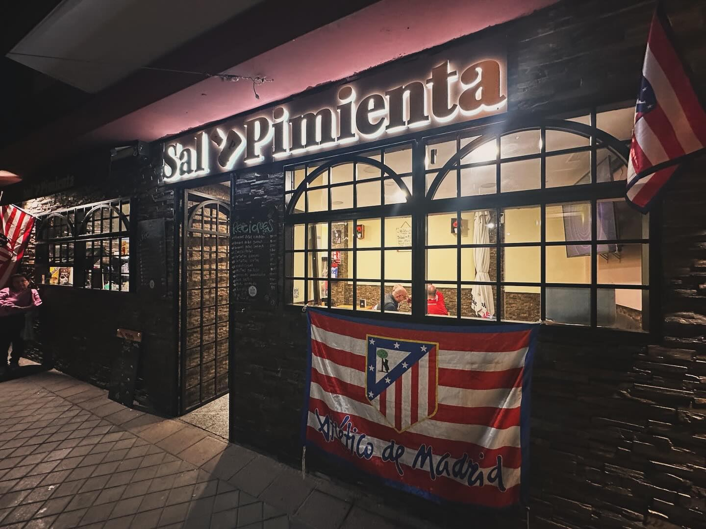
Bar de barrio a cinco minutos andando del estadio. Menú del día entre semana, tapas y raciones de siempre, terraza y mesa larga para los grupos.
Menú del día
El menú cambia cada día; si no has podido verlo, pregunta por WhatsApp y te lo mandamos.
Horario
Cocina de barrio sin trampa: raciones para compartir, bocadillos de los de verdad, cachopo y chuletón para los días grandes. Los precios son los de la carta del local.
Si tienes alguna alergia o intolerancia, díselo a quien te atienda: la carta física lleva los iconos de alérgenos de cada plato y en cocina te lo confirman.
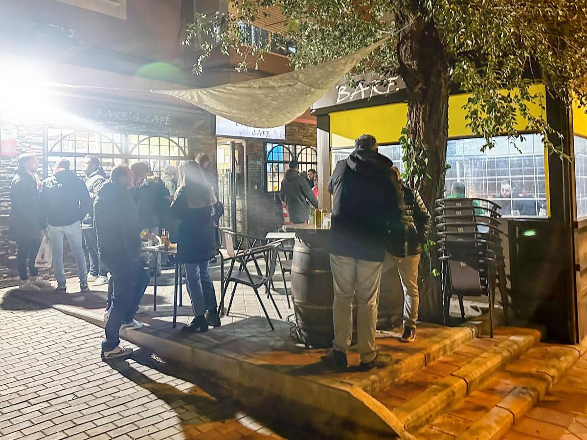
Estamos a cinco minutos andando del Metropolitano, por la calle de La Ilíada. Los días de partido y de concierto abrimos antes, ponemos el fútbol en la tele y la terraza se llena de bufandas. Si venís en grupo, escribidnos y os guardamos mesa para la previa.
Pedimos a los de siempre un poco de paciencia esos días: la barra va a tope, pero las cañas salen frías y los bocadillos de calamares no paran.
Coming for the match or a concert? We're a five-minute walk from the stadium. Cold beer, tapas and a terrace to watch the pre-game. Message us on WhatsApp to book a table.
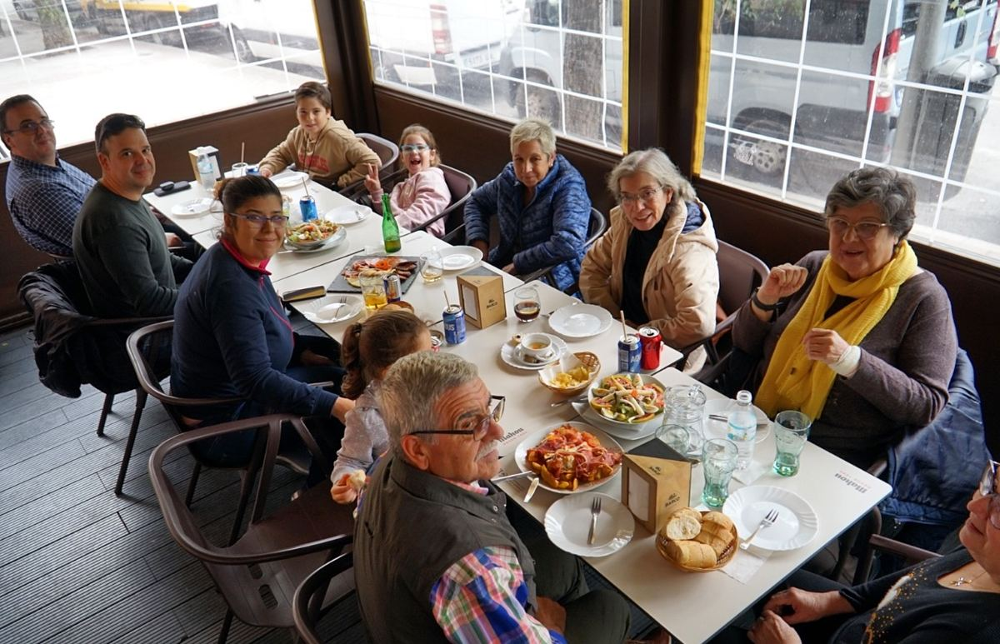
Cumpleaños, comidas de trabajo, cenas de Navidad. Montamos mesa larga para hasta dieciséis personas, con menús cerrados para que nadie se pelee con la cuenta, y si llegáis tarde o por turnos no pasa nada.
Cuéntanos cuántos sois y qué día, y te mandamos las opciones por WhatsApp.
Teníamos una reserva por trabajo un grupo de 16 personas. Llegamos tarde, por turnos, con prisa… y ellos solo respondieron con una sonrisa y amabilidad.Miriam, en Google
Muy buena comida a precios muy asequibles. El servicio del camarero Roberto es excelente.Carlos, en Google
Víctor y Jose, los mejores camareros de la zona del Metropolitano. Atención de 10, comida muy buena y una terraza muy buena a dos pasos del estadio.Lalo, en Google
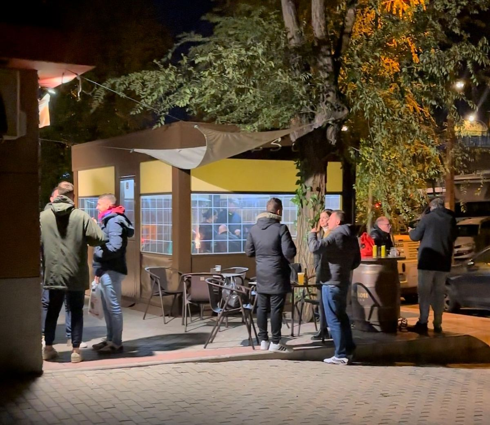
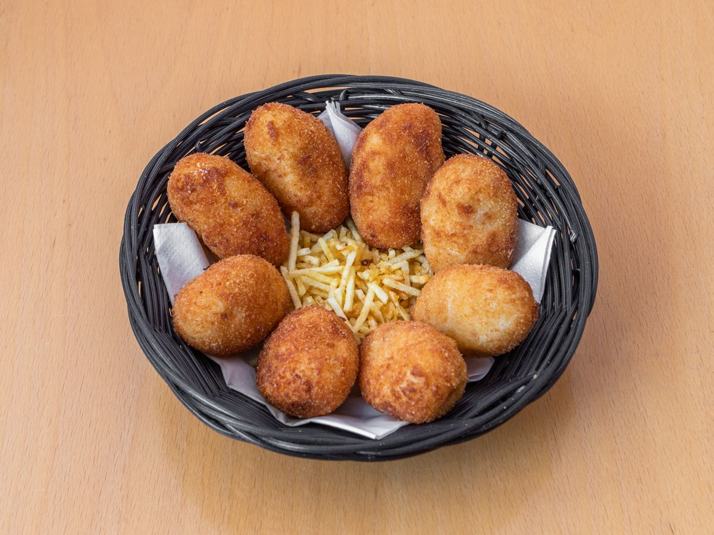
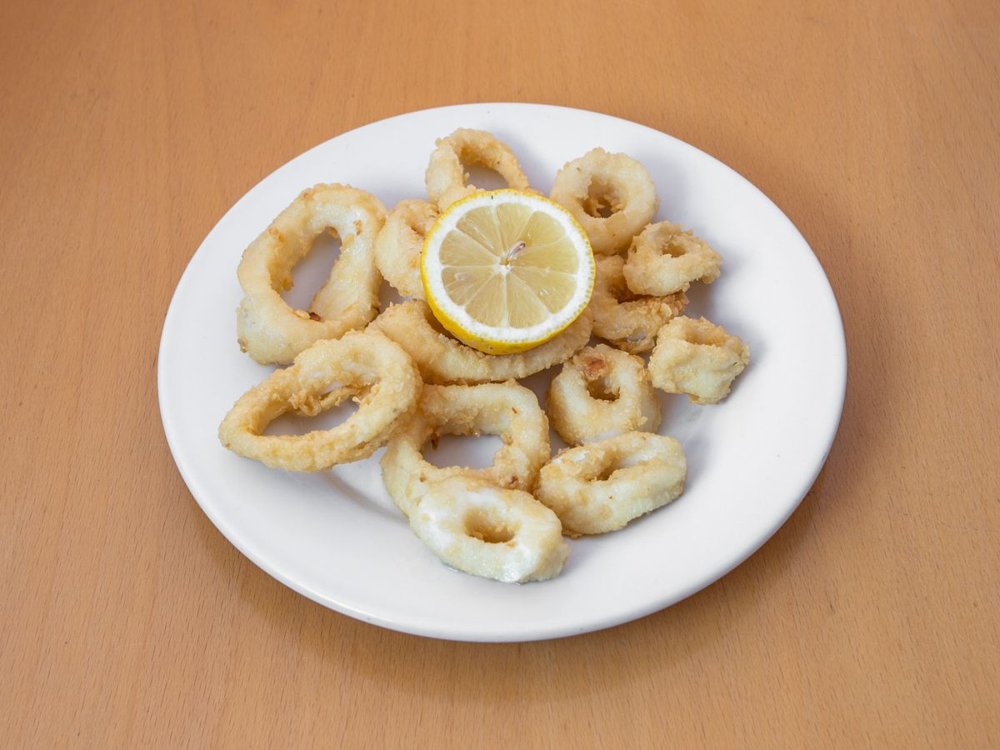
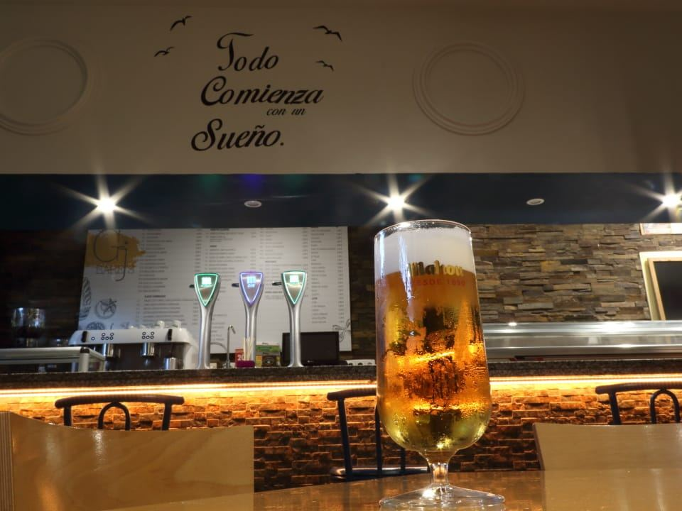
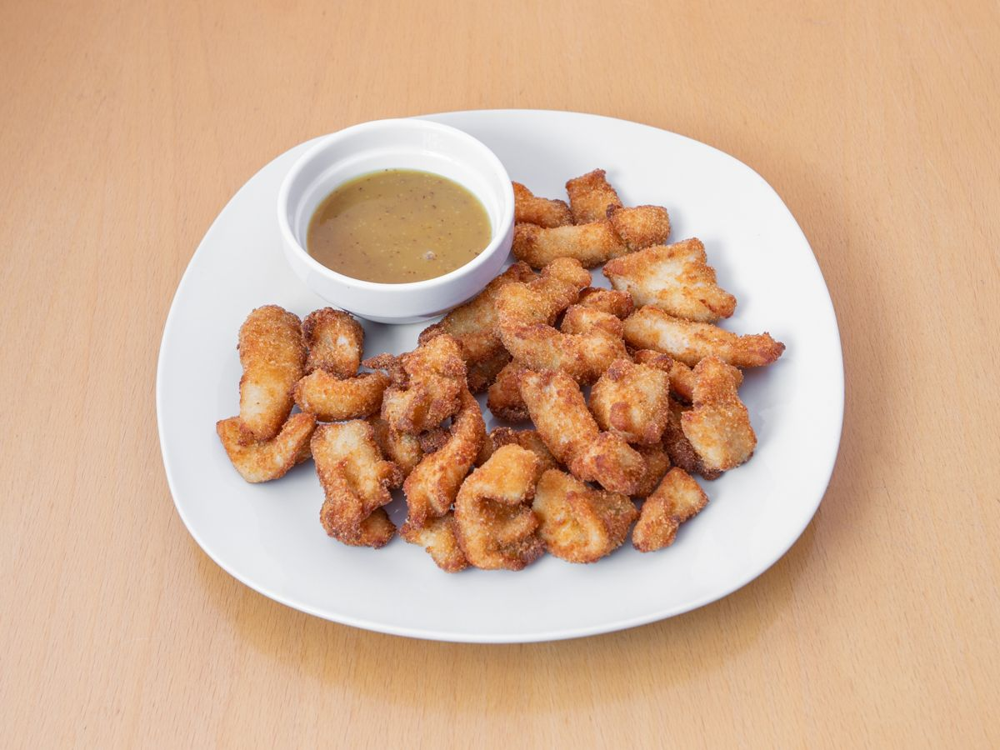
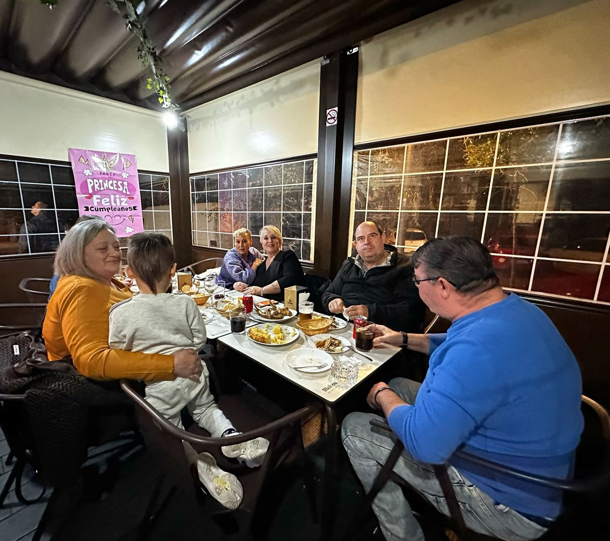
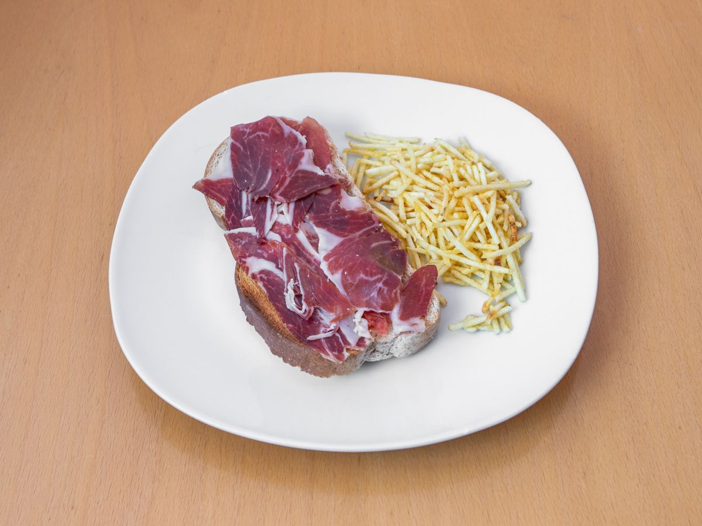
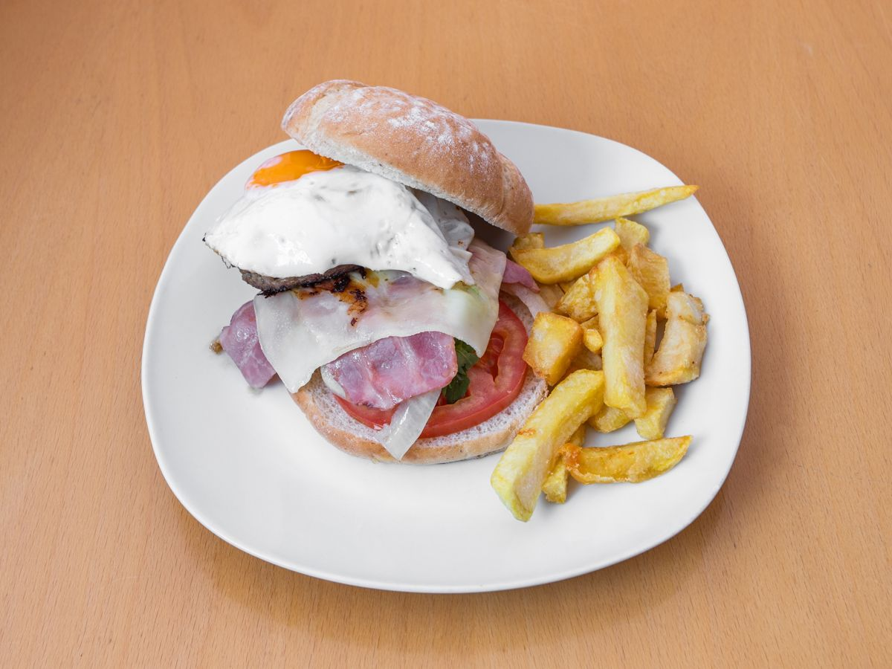
Entre la plaza de Grecia y el metro de Las Musas. Si vienes al estadio, somos la calle que baja hacia la avenida de Luis Aragonés.